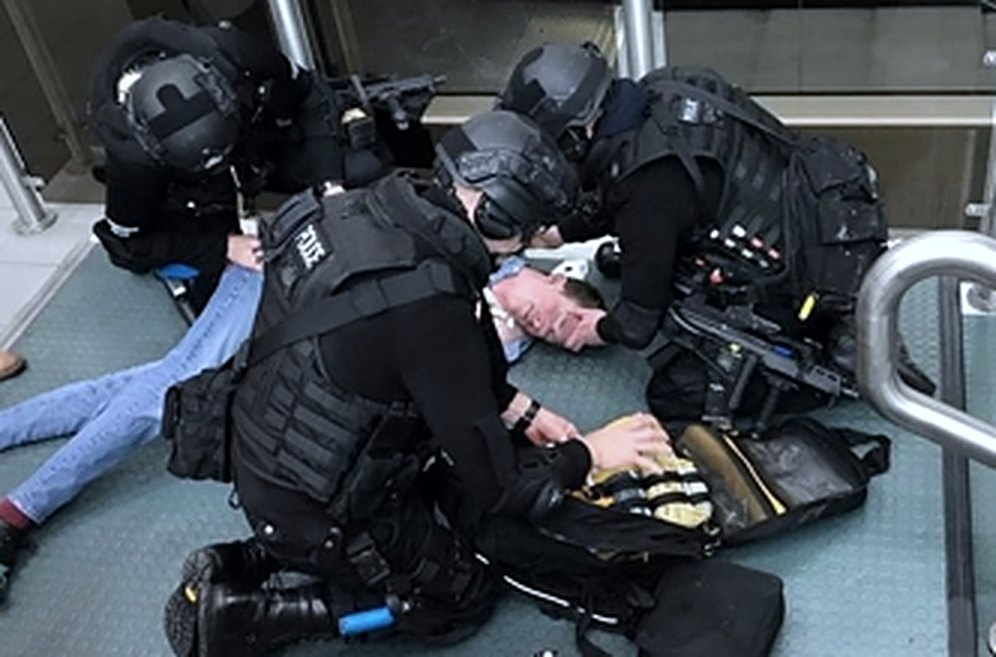
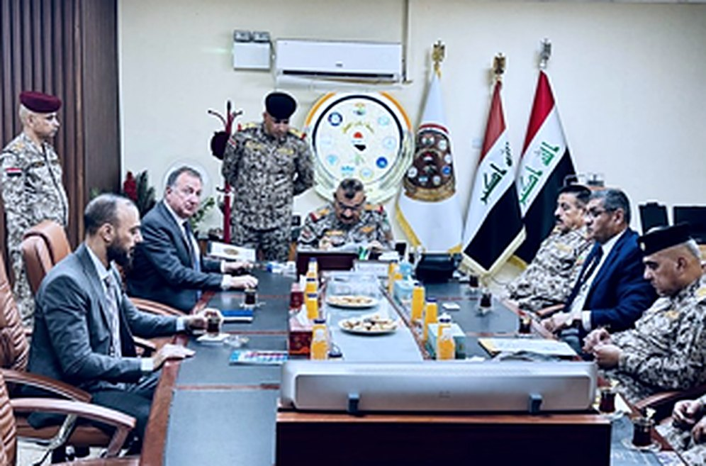

SOC
Serious & organised crime
Disrupt illicit economies, trafficking and the networks that finance instability.
Security & resilience · Capacity building
TAG S&R designs, builds and sustains national and community security resilience — in the environments where it is hardest to get right.
The security & resilience operating company of the TAG International Group — working where the systems are hardest.
What we do
We assess the threat, build the capability, train the people who own it, and stay until it holds.
Diagnose the threat and the real capability gap, with people who have operated in it.
Design and build the institutions, systems and teams that close the gap.
Mentor and accredit local ownership so capability outlasts our presence.

Stay through the hard part — continuity, recovery and measurable resilience.

Across the whole threat landscape
Modern threats don't respect thematic boundaries — organised crime funds terror, hybrid actors weaponise information, cyber reaches into every domain. We build across all of it, as one connected system.
Disrupt illicit economies, trafficking and the networks that finance instability.
Investigative, pursuit and prevention capability built to national standards and oversight.
Assessment, fusion and tradecraft that turn information into lawful, actionable advantage.
Accountable enforcement and justice institutions that communities can trust.
Readiness, force development and interoperability aligned to allied capability targets.
Secure-by-design resilience across networks, OT and the information environment.
Detect and counter foreign information manipulation and interference against open societies.
Counter sabotage, coercion and grey-zone activity across the whole of society.
Prevention and reintegration that strengthen social cohesion at the source.
Track record
Credibility isn't claimed, it's evidenced — by where we have worked, who trusts us to deliver, and the standards we hold ourselves to.
Representative engagements — to be replaced with cleared case studies
How we hold the standard
Security-cleared, multidisciplinary teamsOperators, analysts and trainers, not just advisers.
Independent monitoring & evaluationOutcomes measured, not asserted.
Safeguarding & ethics by designBuilt into every engagement.
Local accreditationTrain-the-trainer models that transfer real ownership.
Who we are
We exist to secure lives and livelihoods — building the capability that governments and communities need to withstand modern threats, and to recover when they are tested.
We are threat-literate without being militarised, and locally legitimate without being soft. That balance is the whole point of TAG S&R.
We speak the language of CNI, cyber, CT and intelligence — and deliver against it.
We build with local ownership, not around it — trusted in the communities we work in.
We don't just diagnose. We stand up capability and stay until it holds.
Work with us
Talk to our team about partner-country capability, consortium bids or a specific resilience challenge.